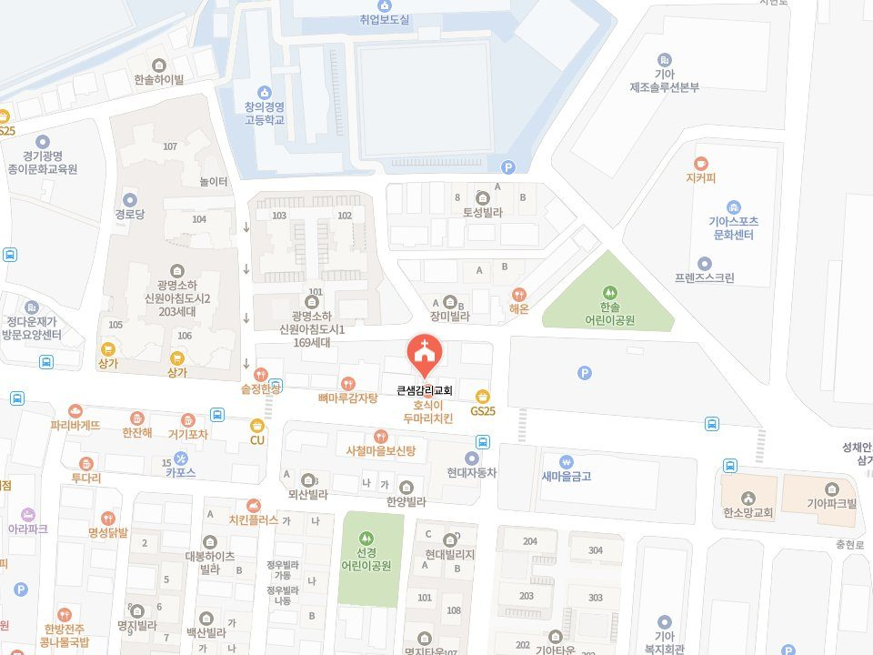

자가용
네비게이션에 ‘창의경영고등학교’ 검색
학교 내에 주차가 가능합니다. 주차하시고 교문으로 바로 내려오시면 큰샘교회가 보입니다.

No. 03
예배
처음 오시는 분도 편하게 오셔서 함께 예배드릴 수 있습니다.
“성경공부하고 싶으신 분은 누구나 신청하세요^^”
교재: 어! 성경이 읽어지네 · 모이는 시간 — 주일 오후 1시 (점심 식사 후)
교회에 오시기 어려우면 유튜브로 함께 드릴 수 있습니다.
주일 성경공부 교재 「어! 성경이 읽어지네」의 원저자 강의입니다. 큰샘교회가 만든 영상이 아니라 생터성경사역원이 공개한 강의입니다.
저작권은 생터성경사역원에 있습니다. 큰샘교회는 옮겨 싣지 않고 연결만 합니다.
네비게이션에 ‘창의경영고등학교’ 검색
학교 내에 주차가 가능합니다. 주차하시고 교문으로 바로 내려오시면 큰샘교회가 보입니다.
1호선 석수역 1번 출구
1번 마을버스 타시고 ‘창의경영고등학교’ 하차하시면 됩니다.

경기 광명시 기아로 23 (소하동) 4층